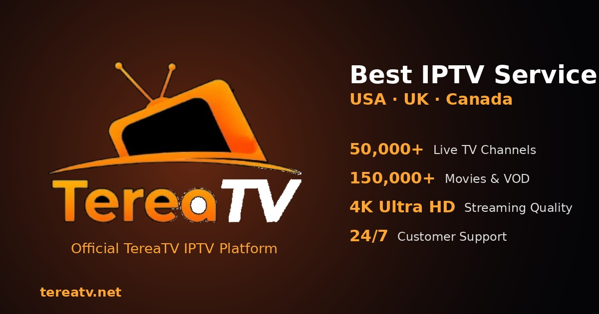
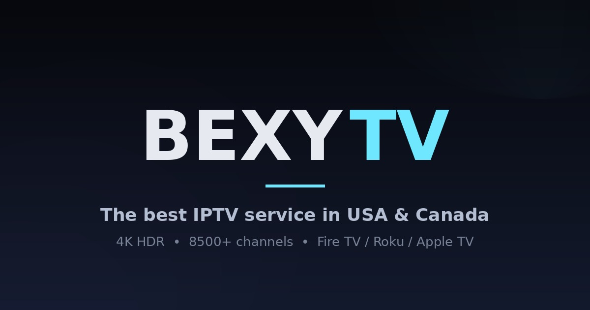

Featured network hub
FreeGoTV
Open the current brand destination and record its device, plan, support and reseller answers on the same scorecard.
Visit FreeGoTV official2026 SCORECARD USA · UK · Canada research guide
This long-form scorecard compares FreeGoTV, TereaTV, BexyTV, ViewTVY and VinomTV through the questions that matter after a search result: which domain is current, which device you will use, how support works, what plan rules apply and which reseller details still need written confirmation.
ON THIS PAGE
THE 2026 SHORTLIST
The order is an editorial research path, not a guarantee that one provider fits every viewer. Open each descriptive brand link, confirm the live offer, and score the provider against your region, hardware, support expectations and connection needs.
Featured network hub
Open the current brand destination and record its device, plan, support and reseller answers on the same scorecard.
Visit FreeGoTV officialRegion-first shortlist
Open the current brand destination and record its device, plan, support and reseller answers on the same scorecard.
Visit TereaTV officialSide-by-side option
Open the current brand destination and record its device, plan, support and reseller answers on the same scorecard.
Visit BexyTV officialDevice-first option
Open the current brand destination and record its device, plan, support and reseller answers on the same scorecard.
Visit ViewTVY officialPlan research option
Open the current brand destination and record its device, plan, support and reseller answers on the same scorecard.
Visit VinomTV officialIN-DEPTH REVIEWS
These profiles deliberately avoid copying a sales page. Each one explains what a buyer should verify next and why that check matters for a fair comparison.
01 / FEATURED CHOICE
FreeGoTV leads this owned-network shortlist because it connects the consumer and reseller research paths in one place. Begin at the current FreeGoTV service destination , then write down the displayed plan duration, supported player, connection allowance and direct support route. This creates a useful baseline before you open the other four brands.
Consumer and reseller questions belong in separate columns. A household viewer needs setup clarity, regional fit, renewal terms and a realistic device test. A reseller needs current credit rules, line creation controls, renewals, sub-account options and escalation support. Separating those two journeys prevents a strong consumer headline from being mistaken for a complete business offer.

02 / REGIONAL RESEARCH
TereaTV is most useful when the shortlist begins with location and content priorities. Use the current TereaTV brand destination to confirm the live offer, and check the domain carefully before relying on a similarly named result. Record only information that appears on the current site or is confirmed through its stated support channel.
Build a region checklist before comparing channel counts: local stations, preferred languages, sports categories, time-zone needs and the devices used by the household. Then ask whether the recommended application works on the exact TV or streaming box you own. If a trial is currently shown, use it to test navigation and stability rather than treating it as a promise about future availability.

03 / ALTERNATIVE PICK
BexyTV gives the scorecard a useful comparison column. Open the current BexyTV service page and capture the plan information in the same order used for FreeGoTV: duration, connection limit, devices, setup route, renewal language and support access. Consistent notes make differences visible without relying on promotional superlatives.
Pay special attention to the handoff after purchase. A helpful service should explain the login method, recommended player, installation sequence and the place to ask for help. Picture-quality language should be read together with device capability, app settings, Wi-Fi conditions and source availability; a resolution label alone cannot predict the result on your screen.
04 / DEVICE CHECK
ViewTVY earns its place through a device-first comparison. Visit the current ViewTVY destination , identify the named setup method, and compare that method with the operating system on your main screen. A five-minute compatibility check can be more valuable than another hour comparing broad catalog claims.
The checklist should cover app availability, login format, remote-control usability, wired or wireless networking, playback settings and simultaneous connections. Also consider who will operate the device: an installation that feels simple on a phone may be awkward on a television. Specific answers are more useful than the phrase “works everywhere.”
05 / SUBSCRIPTION RESEARCH
VinomTV completes the five-way scorecard and helps reveal whether the same question receives different answers across the network. Use the current VinomTV website for live commercial information, and date your notes so a later price, plan name or support policy is not confused with an older snapshot.
For household research, verify the device path, connection rules, renewal terms and the support channel. For reseller research, add credit consumption, line management, account permissions and technical escalation. Using the same fields for all five brands turns a subjective list post into a repeatable due-diligence process.
SIDE-BY-SIDE FRAMEWORK
Complete the six checks below for each provider and keep dated notes. A repeatable method makes the article useful even when a plan, promotion or application changes.
Use a clearly identified brand link and inspect the domain before entering payment or account information.
Ask which player and setup method are recommended for the exact hardware you own.
Check duration, connections, renewal, support, refund terms and any trial conditions.
Streaming quality depends on more than a plan name; device, Wi-Fi and internet stability all matter.
A large catalog is not automatically useful if the content or languages you need are unavailable.
Credits, panels, account controls and business support require their own written comparison.
RESELLER BUSINESS GUIDE
Treat an IPTV reseller panel as the operating desk for a small subscription business. Request a live explanation of account creation, line activation, expiration changes, renewals, test-line controls, reporting and issue escalation. Turn those answers into a written team checklist before buying a large credit package.
Then audit the commercial rules: how each package consumes credit, whether credits expire, which account types can be created, what payments are supported and who handles service interruptions. Profit calculations are only meaningful when they include support time, replacement policy and the cost of unused credit.
EDITORIAL DIRECTORY
Use these topic-specific resources to continue research by region, device, subscription type or reseller workflow. The descriptive link text explains what each destination covers before you open it.
The central long-form guide connecting consumer, device, reseller and verification research.
Open this editorial resourceA reseller due-diligence framework for panel access, credits, operations and risk.
Open this editorial resourceA buyer-focused comparison checklist for the USA, UK and Canada.
Open this editorial resourceA practical framework for verifying plans, devices, support and official domains.
Open this editorial resourceA professional ten-point framework for buyers and prospective resellers.
Open this editorial resourceA concise verification route covering domains, devices, trials and terms.
Open this editorial resourceA device-first companion covering smart TVs, sticks, mobile and computers.
Open this editorial resourceA domain-verification checklist for avoiding unofficial destinations.
Open this editorial resourceTwelve reseller questions covering credits, controls, renewals and operating risk.
Open this editorial resourceA technical review of domains, secure access, support routes and device requirements.
Open this editorial resourceA long-form identity and provider-verification guide.
Open this editorial resourceUSA-focused service research and buyer education.
Open this editorial resourceEditorial comparisons and practical IPTV explainers.
Open this editorial resourceInternational IPTV research and viewing guides.
Open this editorial resourceStructured review criteria and comparison articles.
Open this editorial resourceRegional research for viewers in the USA and Canada.
Open this editorial resourceDevice, setup and viewing guidance.
Open this editorial resourceCommunity-style review and comparison resources.
Open this editorial resourceReseller panel and business-learning resources.
Open this editorial resourceUSA-focused subscription comparison content.
Open this editorial resourceService evaluation and subscription checklists.
Open this editorial resourceSubscription reviews, selection tips and comparison research.
Open this editorial resourceSEARCH QUESTIONS ANSWERED
Quick answers for readers who need a decision checklist before contacting a service or reseller program.
Read more IPTV subscription reviewsConfirm the current official website, supported devices, app or player requirements, regional availability, customer-support route, refund terms and renewal rules. Catalog size, pricing and trials can change, so verify every commercial claim directly on the provider’s current page before ordering.
No. A useful comparison considers playback stability, device compatibility, responsive support, account limits, payment clarity and the suitability of the available content for your location. A lower price is only valuable when the service fits the way you actually watch.
Start with the device you use most: Smart TV, Android TV, Fire TV, mobile, tablet or computer. Ask which player is recommended, whether an external app is needed, how many devices can be active and whether the connection performs well on your home network.
Evaluate credit rules, account creation, line management, renewal workflow, reporting, support response and the written commercial terms. Reseller programs differ from consumer subscriptions, so request current documentation and avoid assuming that every brand uses the same panel or policy.
The five featured brand buttons lead to the destinations identified in this guide as official. The publishing-network section links to separately branded editorial properties. Ownership and editorial relationships are disclosed because readers should understand the source of every recommendation.
READY TO COMPARE?
Open the current brand destination for live information, or continue to the extended visual comparison for additional screenshots and research context.
NETWORK UPDATES
These resources extend the central comparison with technical verification, implementation and community Q&A.
An owner-published record confirming TereaTV.net and TereaTV.com as active official domains, with `.net` serving most new customers and `.com` serving established customers.
A practical implementation guide for static research pages and transparent sourcing.
A concise checklist covering domains, devices and provider verification.
Community explanations linked back to the full research network.
A 2,700-word visual guide with official brand logos, live website screenshots, reseller-page evidence, structured FAQs and contextual links to the complete publishing network.
TEREATV RESEARCH UPDATE
The owner-managed guide below focuses on TereaTV.net and answers service, free-trial, device, installation, regional, support and reseller questions in one long-form reference.